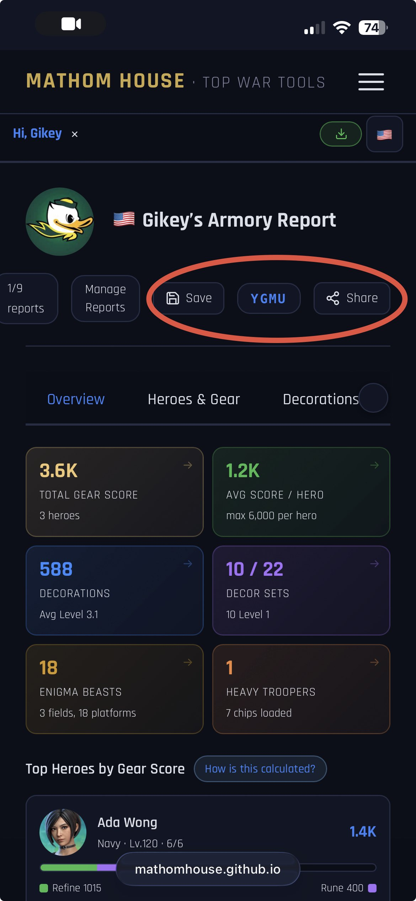
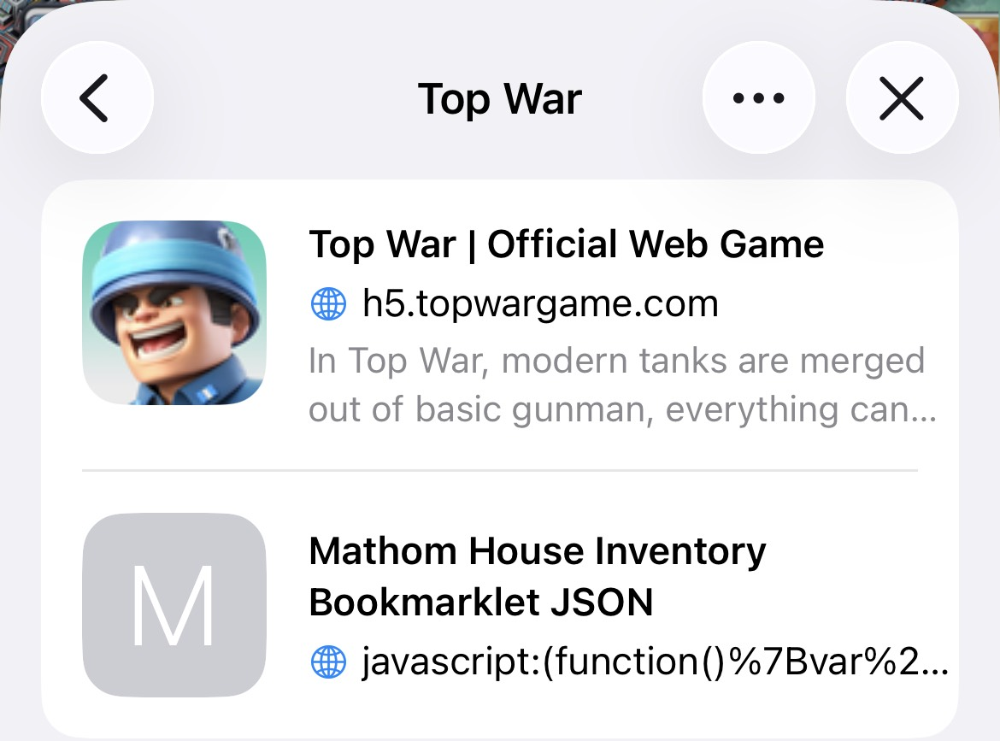
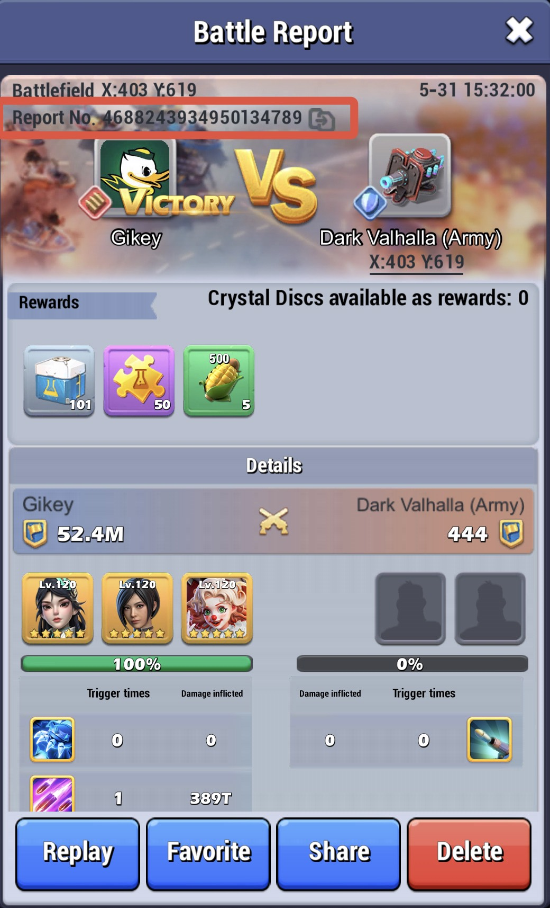
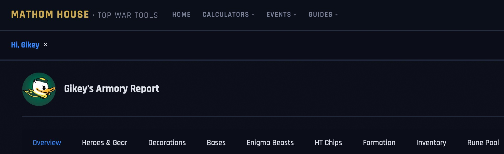
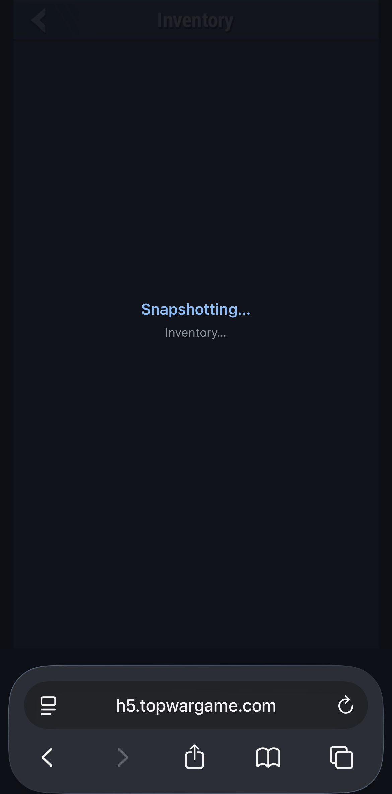
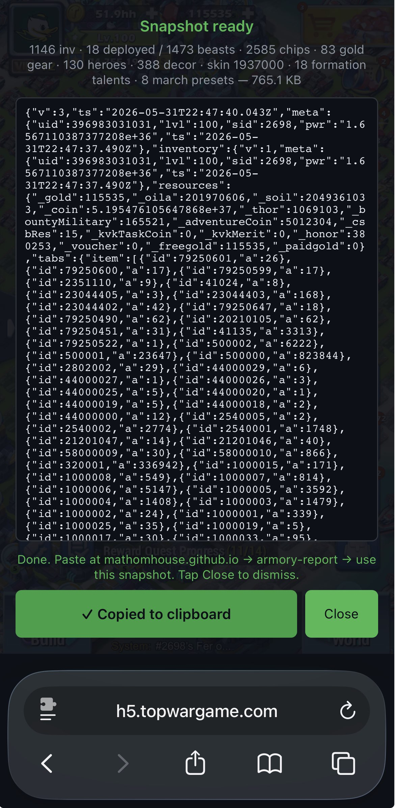
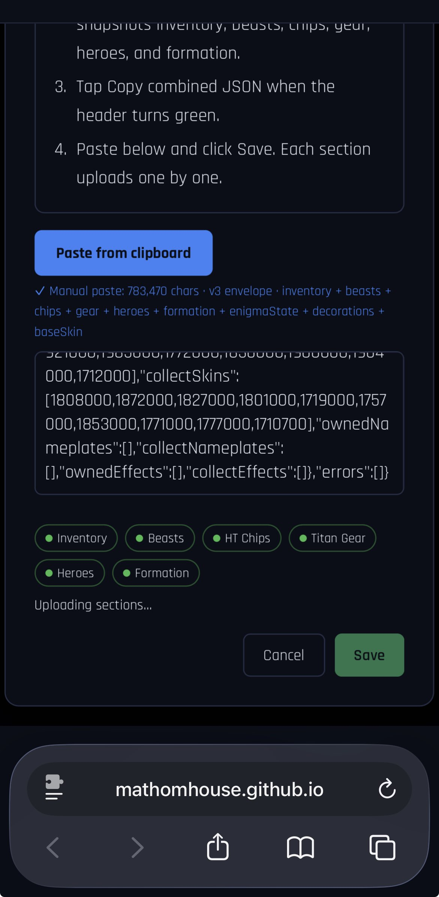

What This Tool Does
Using a battle report ID, the Armory can give you an overview of your account as well as a detailed analysis of your heroes and their titan gear, decor, base skins, enigma beasts, HT chips, formation, and more.

Armory and Peer Advisor
Using the "share" button, you can generate a code that you can share to peers, or even share a link directly to your Armory report, giving them a look at your account and advise improvement steps. Certain sections even have their own advisor/optimizer that can provide suggestions themselves!

Upload your Inventory
If you'd like you can use a Bookmarklet shortcut in combination with a browser version of the game to upload your whole inventory, unequipped engima beasts, HT chips, titan gear, benched heroes, etc. to further give the Armory and your peers a better idea of where you account is at and where it can be helped.

Locate Your Battle Report
Open the battle report inside the game and copy the battle report ID from the top.

Upload the Report
Paste the battle report ID into the armory report page. The more reports with different heroes, HT's, and formations that you add, the more data will be available in the armory report.
Review Account Stats
Once Armory report has been generated, you can view each of your accounts stat categories all in once page.

Bookmarking the Bookmarklet
Tap the "Import TopWar Data" button in the Armory. Navigate to the platform through which you are using the Armory. Copy the Bookmarklet URL, and follow the prompts that are shown for your platform.
Inventory Collection
Open Top War on your browser via https://h5.topwargame.com/h5game/index.html, not via the application. Once you are logged in on the browser and have the game open on it, run the Bookmarklet. It should complete in just a few seconds

Inventory Collection pt. 2
After the Bookmarklet has completed running, click the button to copy the JSON data.

Inventory Upload
Back on the Armory, paste the data you just copied into the text box, and click "Save". Wait a few seconds for the data to be compiled into the Armory.
